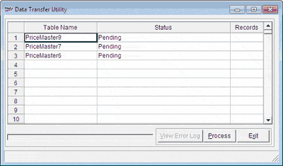

Master data available in other applications or ERP system can be imported to Shoper 9 POS, after converting it to flat files. The data import process compares the key value in the flat file against the key value of the destination table. If the key value is not present in the table, the details pertaining to the key are inserted into the destination table. Otherwise, if the key value is present in the table, the details are updated.
The pre-requisites for successful data import are:
Appropriate Back-end Data Configuration
The flat files with the appropriate name should be present in the directory as specified in the back-end data configuration
The flat files should not contain duplicate entries as it would lead to an insert and update for the same key value
How to reach: Housekeeping > Back-end Data > Import
The Data Transfer Utility window is displayed.

The grid lists all the tables based on the back-end data configuration defined. Click the required line to select the tables to be imported.
Note: The settings specified in the .ini file will be considered while inserting or updating the tables with data from the flat files provided.